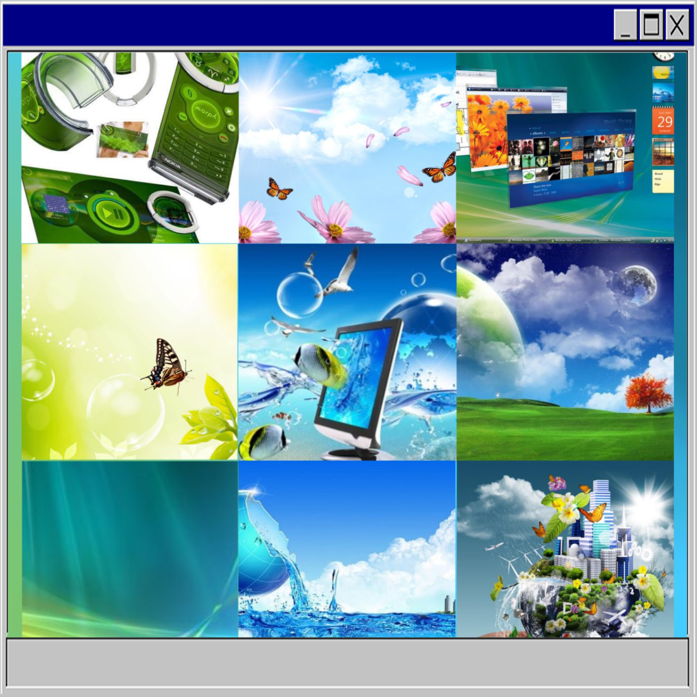

_ _ The idea of technology and advancement was highly popular in 2007, with the evolution of the Frutiger Aero aesthetic_ _
,it is evoking the idea of space.
,what is the space of tech?
,2007 defined this.
,all of the green blue's.
,they evoke nature within these digital spaces_ _
_ _ Technology began to look very clunky and abnoxious
,it is evoking the idea of space.
,what is the space of tech?
,2007 defined this.
,all of the green blue's.
,they evoke nature within these digital spaces_ _